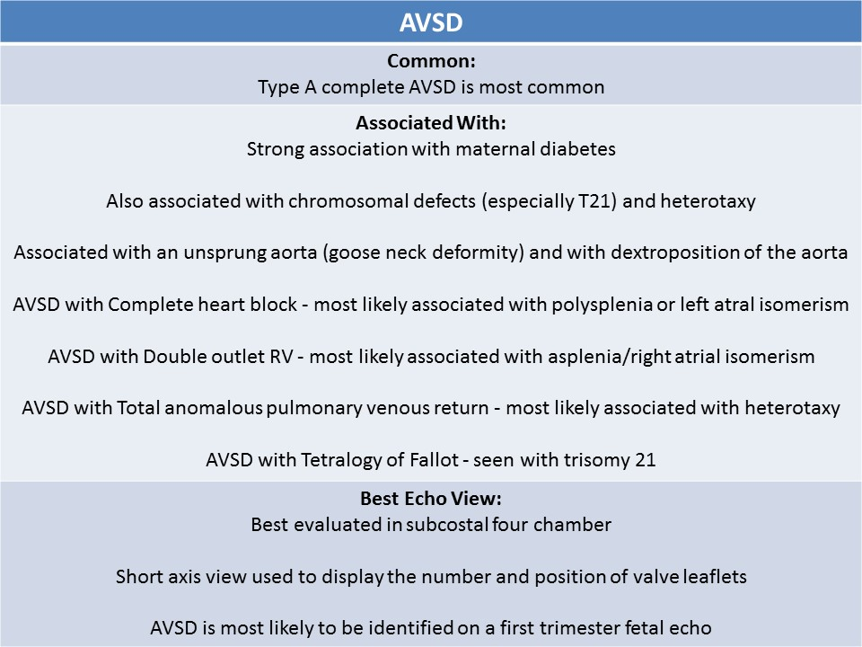
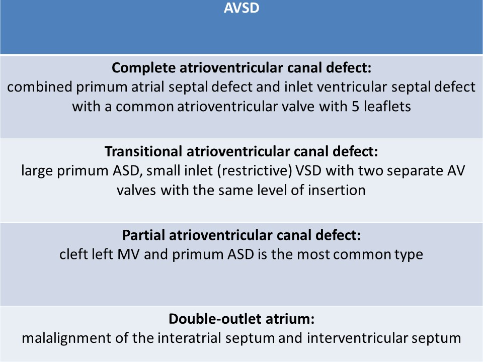
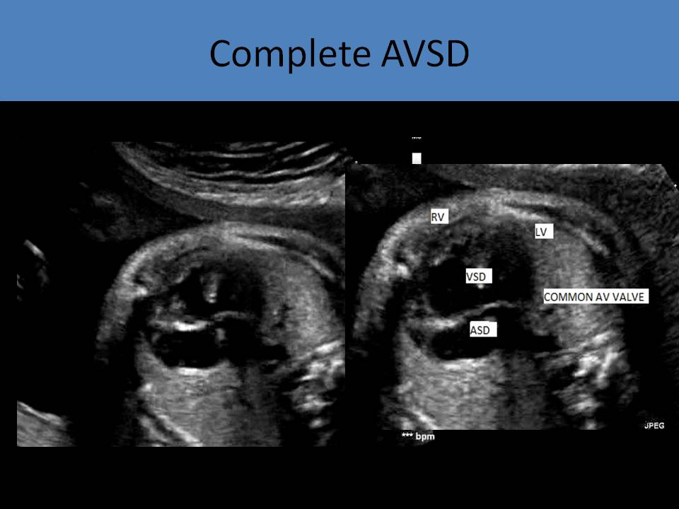
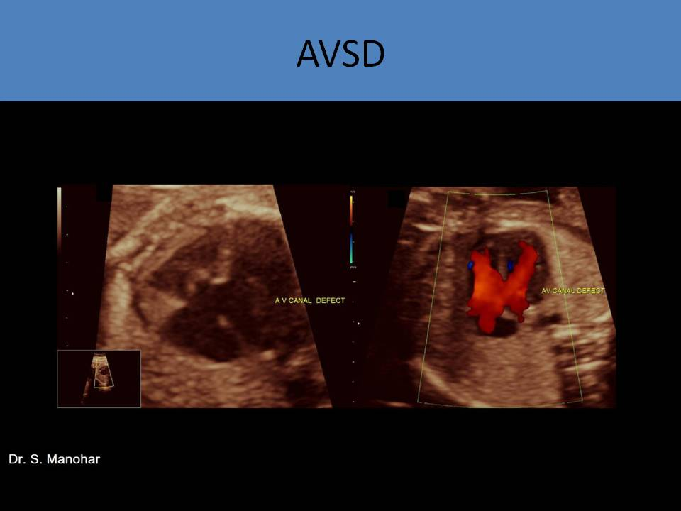
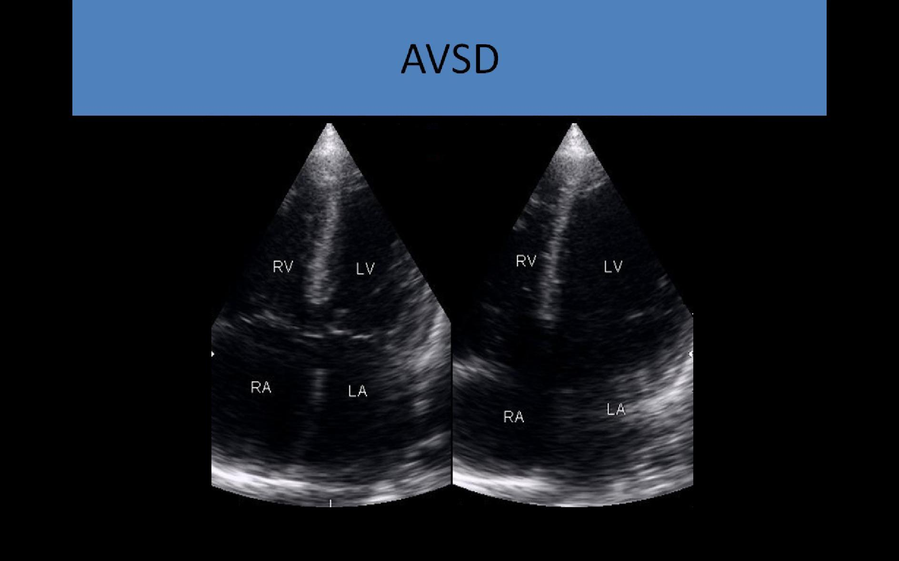

.jpg)
atrioventricular septal defect
General Information:
- Failure of development of the endocardial cushion and the atrioventricular valves
- Common atrioventricular valve with five leaflets
- Combined primum atrial septal defect and inlet ventricular septal defect
- Synonyms: atrioventricular canal defect, endocardial cushion defect, AV canal defect
- Associated with heterotaxy
- 50% of cases have associated defects in other fetal systems
- Strong association with maternal diabetes
- 40-60% of AV canal defects are associated with chromosomal anomalies
- Commonly associated with Trisomy 21( Down syndrome)
- 50% of Trisomy 21 patients have congenital heart defects, 40% of Trisomy 21 can have atrioventricular canal defect
 
Types:- Complete atrioventricular canal defect:
- 70% of atrioventricular canal defects
- Large primum ASD (need to differentiate from dilated coronary sinus) with a large inlet VSD and common atrioventricular valve
- Atrioventricular valve has 5 leaflets with linear insertion across the ventricles
- 2 leaflets bridge the septum: anterosuperior bridging leaflet and posteroinferior bridging leaflet
- 3 leaflets are located laterally
- AVSD with Complete heart block - most likely associated with polysplenia or left atrial isomerism, situs should be evaluated
- AVSD with Double outlet right ventricle - most likely associated with asplenia or right atrial isomerism, situs should be evaluated
- AVSD with Total anomalous pulmonary venous return - most likely associated with heterotaxy
- AVSD with Tetralogy of Fallot - commonly seen with trisomy 21 (Down syndrome), fetus should be evaluated for other chromosomal defect markers
- Commonly associated with dextroposition of the aorta
- Rastelli classification (based on the degree of the commitment of the superior bridging leaflet)
- Rastelli type A: the superior bridging leaflet is predominantly attached to the crest of the septum and in the left ventricle, related to the left ventricular outflow tract obstruction due to elongation of the LVOT
- Rastelli type B: the superior bridging leaflet is attached to papillary muscle of the right side of septum, rare form
- Rastelli type C: free floating of the superior bridging leaflet without attachment of the septum, associated with Down syndrome, TOF, DORV, TGA
- Balanced and unbalanced:
- Balanced AVSD - common atrioventricular valve sits over both ventricles and ventricles symmetrical
- Unbalanced AVSD - common atrioventricular valve sits over a small ventricle and a large ventricle, the presence of a single LV papillary muscle; the number of papillary muscles should be counted
if unbalanced AVC is suspected; most commonly associated with heterotaxy
- Right dominant unbalanced AVSD: associated with left sided lesion ( LVIT obstruction, AS, left ventricular hypoplasia)
- Left dominant unbalanced AVSD: right sided lesion ( right ventricular hypoplasia, PS)
- Transitional atrioventricular canal defect:
- Large primum ASD, small inlet (restrictive) VSD
- Two separate AV valves with the same level of insertion
- Also called intermediate AVSD
- Least common type
- Partial atrioventricular canal defect:
- Consists of 1 or more of the following:
- Large primum ASD
- VSD
- Cleft mitral valve
- Cleft septal tricuspid leaflet
- Right and left atrioventricular valve orifices are separate
- Cleft left atrioventricular valve and primum ASD is the most common type
- Associated with subaortic stenosis, left atrioventricular valve regurgitation
- Consists of 1 or more of the following:
- Cleft left atrioventricular valve: a commissure between superior bridging leaflet and inferior bridging leaflet
- Double-outlet atrium:
- Malalignment of the interatrial septum and interventricular septum
- Occasionally seen in atrioventricular canal defect
- Atrial septal deviation has been associated with left atrial isomerism
- Best echo view to diagnose: four chamber view (apical or subcostal)
- AVSD is most likely CHD to be identified on a first trimester fetal echo
- Loss of the normal offset appearance of atrioventricular valve insertion (normal heart: the tricuspid valve inserted more towards the apex)
- Various sizes of atrial septal defect and ventricular septal defect
- Common atrioventricular valve
- Unsprung aorta
- Goose neck deformity
- Aortic valve is more anterior relative to atrioventricular valves
- Common atrioventricular valve with fibrous annulus
- Anterior unwedged position of aorta
- Demonstrates elongated LVOT
- Must distinguish between complete, transitional and partial atrioventricular canal defect
- Assess atrioventricular valve regurgitation and function; regurgitation is common with a single atrioventricular valve
- Evaluate relative ventricular size and function
- Short axis view used to display the position of valve leaflets
- Determine the presence of relative defects



Complete atrioventricular canal defect
Apical four chamber view - There is a communication between the ventricles ( inlet VSD). Also, there is a communication between the atria ( primum ASD). A common atrioventricular valve is open during the diastole
Unsprung aorta with complete atrioventricular canal defect
Unbalanced atrioventricular canal defect - heterotaxy